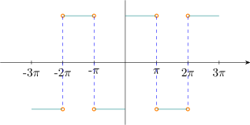
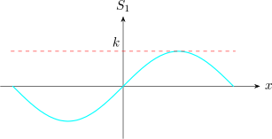
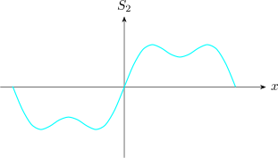
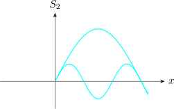

7.3 Fourier Series
Assume \(f(x)\) is a periodic function of period \(2\pi \) that can be represented by a trigonometric series, \begin {equation} f(x) = a_0 + \sum ^{\infty }_{n = 1} (a_n \cos nx + b_n \sin n x) , \label {eq:fourierrep} \end {equation} and that the series may be integrated term by term. Integrating over \([-\pi ,\pi ]\), every term but the first vanishes: \[\int ^{\pi }_{-\pi } f(x)\,dx = \int ^{\pi }_{-\pi }a_0\, dx + \sum ^{\infty }_{n = 1}\left [a_n\int ^{\pi }_{-\pi }\cos nx\, dx + b_n \int ^{\pi }_{-\pi } \sin nx\, dx\right ] = 2\pi a_0 .\] Multiplying (10) by \(\cos mx\), where \(m\) is a fixed positive integer, and integrating, Theorem 7.2.1 leaves only the term with \(n = m\): \[\int ^{\pi }_{-\pi } f(x) \cos mx\, dx = a_m\int ^{\pi }_{-\pi } \cos ^2 mx\, dx = a_m \pi .\] Similarly, multiplying by \(\sin mx\) gives \(\int ^{\pi }_{-\pi } f(x)\sin mx\,dx = b_m\pi \). Writing \(n\) in place of \(m\), these are Euler’s formulas: \[a_0 = \frac {1}{2\pi }\int ^{\pi }_{-\pi }f(x)\,dx ,\qquad a_n = \frac {1}{\pi }\int ^{\pi }_{-\pi } f(x) \cos nx\, dx ,\qquad b_n = \frac {1}{\pi }\int ^{\pi }_{-\pi } f(x)\sin nx\, dx .\]
Definition 7.3.1. For a function \(f\) of period \(2\pi \), integrable over a period, the numbers \(a_0\), \(a_n\) and \(b_n\) given by Euler’s formulas are the Fourier coefficients of \(f\), and the trigonometric series \[a_0 + \sum ^{\infty }_{n=1} (a_n \cos nx + b_n \sin nx)\] with these coefficients is the Fourier series of \(f\).
The definition makes sense whether or not the series converges to \(f\); when it does is the subject of the next subsection. Note that \(a_0\) is the average value of \(f\) over a period.
Example 7.3.2. Find the Fourier series of the square wave \[f(x) = \begin {cases} -k, & -\pi \leq x <0,\\ k, & 0\leq x <\pi , \end {cases}\qquad f(x + 2\pi ) = f(x) .\]
Solution.

The average value is zero, so \(a_0 = 0\). Since \(f\) is odd (apart from its values at the jumps, which do not affect the integrals), \(f(x)\cos nx\) is odd and \(a_n = 0\). For \(b_n\), \begin {align*} b_n & = \frac {1}{\pi }\left [\int ^0_{-\pi } (-k)\sin nx\, dx + \int ^{\pi }_0 k\sin nx\,dx\right ] = \frac {k}{n\pi }\Big [\cos nx\Big ]^0_{-\pi } - \frac {k}{n\pi }\Big [\cos nx\Big ]^{\pi }_0\\ & = \frac {k}{n\pi }(1 - \cos n \pi ) - \frac {k}{n\pi }(\cos n\pi - 1) = \frac {2k}{n\pi }\big (1 - (-1)^n\big ), \end {align*}
using \(\cos n\pi = (-1)^n\). So \[b_n = \begin {cases} 0, & n \text { even},\\ \frac {4k}{n\pi }, & n \text { odd}, \end {cases}\] and the Fourier series is \[f(x) = \frac {4k}{\pi }\left (\sin x + \frac {1}{3}\sin 3x + \frac {1}{5}\sin 5x + \cdots \right ) = \frac {4k}{\pi } \sum ^{\infty }_{n=1} \frac {\sin (2n-1)x}{2n -1} .\] The partial sums are \[S_1 = \frac {4k}{\pi }\sin x ,\qquad S_2 = \frac {4k}{\pi }\left (\sin x + \frac {1}{3}\sin 3x\right ),\qquad S_3 = \frac {4k}{\pi }\left ( \sin x+ \frac {1}{3}\sin 3x + \frac {1}{5}\sin 5x\right ),\] shown below for \(k = 1\).


The second partial sum adds to \(S_1\) the term \(\frac {4k}{3\pi }\sin 3x\); the two components are shown separately below.

Each term flattens the top of the curve further. Taking the series to converge to \(f\) at \(x = \frac {\pi }{2}\), where \(f = k\) and \(\sin (2n - 1)\frac {\pi }{2} = (-1)^{n+1}\), \[k = \frac {4k}{\pi }\left ( 1 - \frac {1}{3} + \frac {1}{5}- \frac {1}{7} + \cdots \right ),\qquad \text {so}\qquad 1 - \frac {1}{3} + \frac {1}{5}- \frac {1}{7} + \cdots = \frac {\pi }{4},\] Leibniz’s series for \(\pi \).
Example 7.3.3. Find the Fourier series of \(f(x) = x\) on \(-\pi <x<\pi \), extended with period \(2\pi \), and deduce another series for \(\pi \).
Solution. The function is odd, so \(a_0 = a_n = 0\). Integrating by parts, \[b_n = \frac {1}{\pi }\int _{-\pi }^{\pi }x\sin nx\,dx = \frac 2\pi \left [-\frac {x\cos nx}{n} + \frac {\sin nx}{n^2}\right ]_0^\pi = -\frac {2\cos n\pi }{n} = \frac {2(-1)^{n+1}}{n} .\] So \[x = 2\left (\sin x - \frac {\sin 2x}{2} + \frac {\sin 3x}{3} - \cdots \right ),\qquad -\pi <x<\pi .\] At \(x = \frac {\pi }{2}\) the terms with even \(n\) vanish and this gives again \(\frac {\pi }{2} = 2\left (1 - \frac 13 + \frac 15 - \cdots \right )\).
Questions on this section
Stuck on something here? Ask below and it stays attached to this topic.